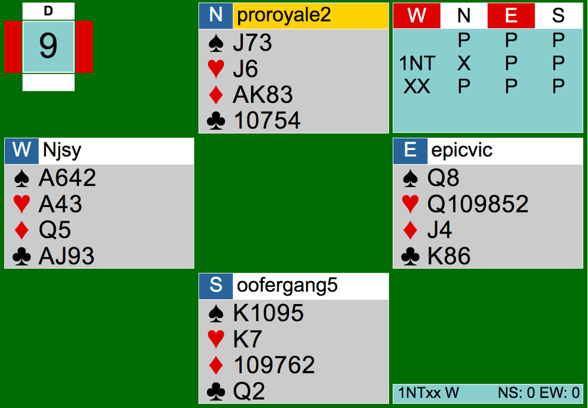
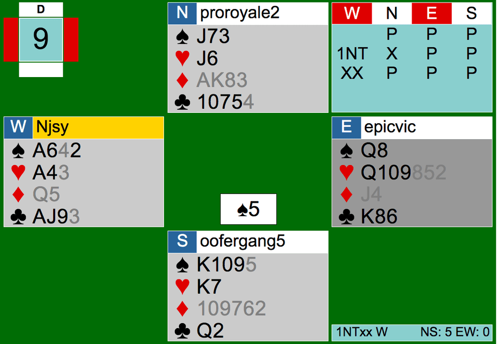
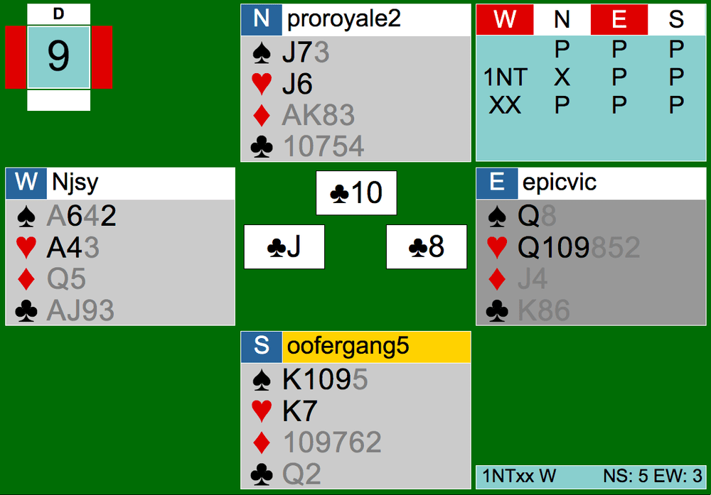

Yep, you read the title right. That was my reaction when looking over some over the boards played in the CK Tuesday Team Game on July 28th. Could be because I saw some horrendous plays or some miracles— we’ll find out today. Click here for the link to the hands and follow along.
Disclaimer: In no way, shape, or form am I directly attacking the player(s). We are all learning! Glad to see players having fun and trying new bids/plays out. Keep up the fierce energy.
We don’t see redoubles very often, let alone in final contracts. Board 9 at one of the tables ended up in a redoubled contract of 1NTXX by West.

At first glance, it was a bit crazy. West redoubles with a bare minimum of 15 points in the 1NT range after North’s aggressive penalty double. In North’s seat, with 9 points, that is not enough for a penalty double. The double can mean different values depending on partnerships, but from what I see at CK, it is generally penalty, showing a 15+ point hand or better. East, with 8 points, should be considering game right now. Game is possible if West opened 1NT with the upper range (good 16-17 points). Over the double, systems are still on, meaning stayman and transfers are still played. East should make a transfer to hearts by bidding 2D. Even though the values are not the best, it is better from East’s perspective to play in a suit contract than NT. After the double, West ended up redoubling— which can either mean West is confident in making 1NT or asking partner to bid. Last time I checked though, there were no agreements about redoubling meaning partner should bid. If West meant it as thinking they can make this, West is wrong. With only 15 points and no stoppers in any suits (you cannot rely on partner), it’s better to just go down in a doubled contract than a redoubled contract. West should also be afraid of North’s double— anything West plays, North can cover if North is really showing 15+ points. Anyway, the auction ended there in 1NTXX by West.
One of the things that went normally was the opening lead. North correctly led the Ace of diamonds from AKxx. NS were able to run their diamond suit right off the bat, taking the first 5 tricks. EW can only lose 1 more trick. South played a spade after running diamonds. What would you play in West here?

Tricky, but not really. The correct play is to play low. First, that goes by the saying “second hand low, third hand high” but more importantly, you can take 2 spade tricks no matter who has a King of spades. Here, the Queen on the board would win because South led holding the King. If North held the King instead, it still would be 2 spade tricks because North would play the King here, but now the Queen is set up on the board and West has the Ace of spades in hand for the second spade trick. Instead of playing low, West goes up with the Ace. I think it has to do with the panic and tension that if EW goes down, they are losing buckets per trick. Stay calm, don’t panic, and think again. Now that the Ace is played though, South knows that he can cover the Queen of spades on the board with his King, and if West doesn’t have the Jack of spades, his ten and nine of spades are winning as well. And that’s what South did— NS scored the next 2 spade tricks.

On the bright side for EW, South pitched a winning spade on West’s Jack of clubs. South was forced to though, there is no way South can guard the hearts and the spades in this position. It is definitely better to protect the King of hearts. Both pairs tried their best in the race to 7 tricks. The result was 1NTXX-2 by West. Most heartbreaking part for EW is, they were vulnerable as well for a negative score of 1000. Good try, thoroughly reconsider whether to redouble or not next time!